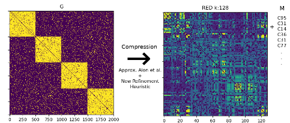
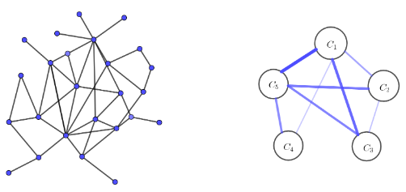
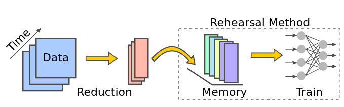

whoami 


Hey there! I'm using python! (and pytorch). I recently got a Ph.D. (july 2022) from Ca' Foscari University of Venice on Computer Vision / Continual Learning. I consider myself a script k1ddie.
My path of studies üéì:
- ⇣ 2015 B.Sc. in Informatics - Ca' Foscari University (Venice, Italy)
- ⇣ 2018 M.Sc. in Computer Science - Data Management and Analytics - Ca' Foscari University (Venice, Italy)
- ⇣ 2022 Ph.D. in Artificial Intelligence - Ca' Foscari University (Venice, Italy)
- ↪ Visiting Researcher, LAMP group (Joost Van De Weijer) Computer Vision Center (CVC), 9 months - (Barcelona, Spain)
resources
- - Visual introduction to Visual Transformers → A simple introduction by examples to ViTs
- - Introduzione Unsupervised Learning → IPython Notebook with exercices (Lang üáÆüáπ)
- - Geospatial data wrangling → IPython Notebook with exercices (Lang üáÆüáπ)
- - Tutorato di architettura degli elaboratori → YouTube Video Lectures (Lang üáÆüáπ)
publications
-

Simpler Is Better: off-the-shelf Continual Learning Through Pretrained Backbones
Workshop T4V (CVPR 2022)
üíª code | üìÑ pdf | üìå cite
@misc{pelosin2022simpler, author = {Pelosin, Francesco}, title = {Simpler is Better: off-the-shelf Continual Learning Through Pretrained Backbones}, publisher = Transformers 4 Vision Workshop (CVPR 2022), year = {2022}, } -

Towards Exemplar-Free Continual Learning in Vision Transformers: an Account of Attention, Functional and Weight Regularization
Workshop CLVISION (CVPR 2022) - Runner-up paper award
üíª code | üìÑ pdf | üìå cite
@inproceedings{pelosin2022towards, title={Towards exemplar-free continual learning in vision transformers: an account of attention, functional and weight regularization}, author={Pelosin, Francesco and Jha, Saurav and Torsello, Andrea and Raducanu, Bogdan and van de Weijer, Joost}, booktitle={Proceedings of the IEEE/CVF Conference on Computer Vision and Pattern Recognition}, booksubtitle={Workshop on Continual Learning}, pages={3820--3829}, year={2022} } -
Smaller is Better: An Analysis of Instance Quantity/Quality Trade-off in Rehearsal-based Continual Learning
IJCNN (2022)
üíª code | üìÑ pdf | üìå cite
@misc{pelosin2021better, title={Smaller Is Better: An Analysis of Instance Quantity/Quality Trade-off in Rehearsal-based Continual Learning}, author={Francesco Pelosin and Andrea Torsello}, year={2022}, book={IJCNN} } -

Unsupervised semantic discovery through visual patterns detection
S+SSPR (2022)
üíª code | üìÑ pdf | üìå cite
@article{DBLP:journals/corr/abs-2102-12213, author = {Francesco Pelosin and Andrea Gasparetto and Andrea Albarelli and Andrea Torsello}, title = {Unsupervised semantic discovery through visual patterns detection}, journal = {S+SSPR}, year = {2021}, } -
Separating Structure from Noise in Large Graphs Using the Regularity Lemma
Pattern Recognition (2020)
üíª code | üìÑ pdf | üìå cite
@article{FIORUCCI2020107070, title = {Separating Structure from Noise in Large Graphs Using the Regularity Lemma}, journal = {Pattern Recognition}, volume = {98}, pages = {107070}, year = {2020}, issn = {0031-3203}, doi = {https://doi.org/10.1016/j.patcog.2019.107070}, url = {https://www.sciencedirect.com/science/article/pii/S0031320319303711}, author = {Marco Fiorucci and Francesco Pelosin and Marcello Pelillo}, keywords = {Regularity lemma, Graph summarization, Structural patterns, Noise, Randomness, Graph similarity search}, abstract = {How can we separate structural information from noise in large graphs? To address this fundamental question, we propose a graph summarization approach based on Szemerédi’s Regularity Lemma, a well-known result in graph theory, which roughly states that every graph can be approximated by the union of a small number of random-like bipartite graphs called “regular pairs”. Hence, the Regularity Lemma provides us with a principled way to describe the essential structure of large graphs using a small amount of data. Our paper has several contributions: (i) We present our summarization algorithm which is able to reveal the main structural patterns in large graphs. (ii) We discuss how to use our summarization framework to efficiently retrieve from a database the top-k graphs that are most similar to a query graph. (iii) Finally, we evaluate the noise robustness of our approach in terms of the reconstruction error and the usefulness of the summaries in addressing the graph search task.} } -
Graph Compression Using The Regularity Method
arxiv (2019) M.Sc. Thesis
üíª code | üìÑ pdf | üìå cite
@article{DBLP:journals/corr/abs-1810-07275, author = {Francesco Pelosin}, title = {Graph Compression Using The Regularity Method}, journal = {CoRR}, volume = {abs/1810.07275}, year = {2018}, url = {http://arxiv.org/abs/1810.07275}, eprinttype = {arXiv}, eprint = {1810.07275}, timestamp = {Tue, 30 Oct 2018 20:39:56 +0100}, biburl = {https://dblp.org/rec/journals/corr/abs-1810-07275.bib}, bibsource = {dblp computer science bibliography, https://dblp.org} }
* .
. . .
. * *.
* * *
. . . *
*
. * lakj